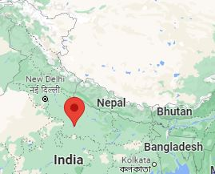

Status
Energy forms the basic prerequisite for any modern economy. Despite having a geographical and geological advantage, India imports about 45% of its total energy requirements in form of conventional energy fuels, in addition, due to infrastructural bottle-neck its accessibility and affordability to the lowest level have been a chronic issue and an impediment to the rural development. Through this initiative, we plan to formulate a decentralised energy security strategy following a regional approach. Long term goal is to achieve self-sufficiency in Energy availability, utilising indigenous resources.
Aim
- Affordable and Clean Energy (SDG- 7)
- Addressing Rural Poverty (SDG- 1)
- Reduced Inequality and Inclusive development (SDG- 10)
- Climate Action (SDG- 13)
- Decent work opportunities and Economic Growth (SDG- 8)
Objectives
- Planning framework for Decentralized Energy Security
- Evaluating Local Energy Resource Base
- Diversifying energy basket
- Interconnected Power Infrastructure
- Interconvergence with existing Government Schemes
- Utilizing energy for creating labour intensive opportunities
- Interlinkage with market for wider outreach
Case Study 1: Patara, UP
Local Resources: Biocompost, Biofuel, Solar, Reused Cooking Oil Scheme: PM KUSUM, Swachh Bharat Mission, MGNREGA With interconvergence of governement scheme and utilizing local resources an energy sustainable ecosystem could be made.
Why fund us?
For initial projects we plan to raise money through crowd funding and CSR funding. Expenditure of CSR funds have been mostly skewed – disproportionately high towards education and health without yielding any substantial output. By supporting our initiative, company would be provided with holistic development plan peculiar to a local region, it would help the industry in boosting efficiency of their CSR activity and publicizing the same.
Conclusion
Currently India produces about 370 GW of energy, this initiative would not only meet the target of clean energy set up at COP 26, Paris Climate Deal but also provide affordable, equitable and sustainable source of energy at the lowest hierarchy.
Expertise
- Dr. Rudra Mukherjee: Marie Curie Research Scholar, University of Glasgow, 7+ year experience in Energy field.
- Pranjal Srivastava: Commonwealth Scholar, Imperial College London, Interested in energy sustainability, circular economy and regional planning.